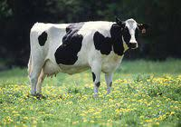

Información
COW es un lenguaje de programación orientado a bovinos. Ya sabemos que las vacas sólo entienden la palabra «moo» (o traducido al español, «muu»), por lo que todas las palabras claves del lenguaje son variaciones en mayúscula o minúscula de la misma. Esto nos facilita bastante las cosas a la hora de documentar los programas, ya que todo lo que no sea «moo» (en cualquiera de sus formas alternativas) se tomará por un comentario. Básicamente, COW es un lenguaje imperativo en el que tenemos acceso a una memoria (en principio ilimitada) indexada por posición. En todo momento hay un puntero interno que nos indica cuál es bloque de memoria actual, y disponemos de instrucciones para desplazar este puntero hacia adelante (moO) o hacia atrás (mOo). Por supuesto, podemos modificar el contenido de la dirección apuntada, decrementándolo en 1 (MOo), incrementándolo en 1 (MoO), o fijándolo a 0 (OOO). Hay también un registro interno del/al que podemos copiar el valor de un bloque de memoria mediante MMM. La entrada/salida se realiza mediante oom (para leer un valor y almacenarlo en el bloque de memoria actual) y OOM (para imprimir el valor del bloque de memoria actual).
Lo más interesante de COW son las instrucciones que hacen referencia al control del flujo de ejecución. Tenemos así a MOO y moo que son muy similares (pero no idénticas) a while y endwhile respectivamente (usando el valor del bloque actual de memoria como condición de control: 0 es FALSE, y diferente de 0 es TRUE). Moo es una lectura/escritura condicionada al valor del bloque de memoria actual (lectura si es 0, escritura en otro caso). Finalmente, mOO ejecuta el contenido del bloque de memoria actual como si fuera una instrucción (hay un código numérico para cada una). Es importante tener en cuenta que al igual que ocurría con Homespring, en COW se retira la carga de una sintaxis estricta de los hombros del programador, no situándola en ningún lugar en particular. Así, no tiene por qué haber un moo para todo MOO (ni viceversa). Más aún, la disponibilidad de mOO proporciona la flexibilidad de LISP a la hora de manipular programas como datos, abriendo la puerta por ejemplo a la definición dinámica de bucles.
